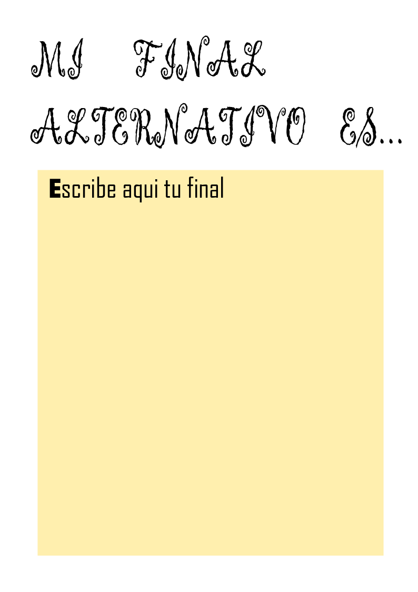

Nos encontramos en clase. La maestra hablará con los alumnos sobre qué les ha parecido la obra de teatro que vieron en la clase anterior, los alumnos nos dirán qué personaje era el protagonista, cuál era el antagonista, etc, señalando en la pizarra quién es quién. Además, tendrán que decir algo que les haya gustado y alguna característica que no.
Aparecerán en una imágen los siguientes personajes:
Principales
Tom Sawyer, protagonista del libro.
Huckleberry Finn, mejor amigo de Tom.
Joe Harper, amigo íntimo de Tom.
Becky Thatcher, hija del juez del condado, novia de Tom.
Joe "el Indio", indio de carácter vengativo.
Muff Potter, hombre que ayudaba al Dr. Robinson.
Tía Polly, mujer de alma sencilla y tía de Tom Sawyer y persona muy poco inteligente.
Jim, muchachuelo de color que ayuda en los quehaceres en casa de Tía Polly.
Secundarios
Sidney, medio hermano de Tom.
Mary, prima de Tom.
Billy, compañero de clase de Tom.
Johnny Milles, compañero de clase de Tom.
Amy Lawrence, ex novia y compañera de clase de Tom.
Juez Thatcher, juez del condado y padre de Becky.
Mr. Walters, superintendente de la escuela dominical.
Jeff Thatcher, abogado, hermano del juez Thatcher.
Ben Rogers, chico burlón de la pandilla.
Dr. Robinson, médico residente en el pueblo.
La cabra, mascota de Huck.
A continuación, propondremos que, en grupos, piensen un final alternativo para la obra y seguidamente lo expongan al resto de la clase. La hoja que se les entregará será esta:

Figura 10
Finalmente les recordaremos que su tarea para las vacaciones de pascua es repasar el guión que les dimos en la primera sesión. Les podemos indicar que pueden indagar más por internet acerca de la obra para adentrarse más en el papel.
Las aventuras de Tom Sawyer es una novela del autor estadounidenseMark Twain publicada entre 1876 y 1878,[1][2] actualmente considerada una obra maestra de la literatura. Relata las aventuras de la infancia de Tom Sawyer, un niño que crece durante el antebellum de la Guerra de Secesión en «St. Petersburg», una población ficticia, de la costa del río Mississippi inspirada en Hannibal, donde creció el autor.
Tom Sawyer vive con su tía Polly y su medio hermano, Sidney. En una pelea callejera, Tom se ensucia la ropa y le obligan a pintar la valla al día siguiente como castigo. Tom hábilmente convence a sus amigos para que le canjeen pequeños tesoros por el privilegio de hacer su trabajo. Luego negocia los pequeños tesoros por boletos de la Escuela Dominical que se reciben, normalmente, cuando se memorizan versículos de la Biblia. Tom intercambia los boletos por una Biblia, ante la sorpresa y el desconcierto del superintendente que pensaba que "era simplemente absurdo que este muchacho pudiera haber almacenado dos mil versículos de sabiduría bíblica en su cabeza mientras que, una simple docena, sin lugar a dudas forzaría en extremo su capacidad".
Tom se enamora de Rebecca Thatcher (Becky), una chica nueva en la ciudad e hija de un juez, y la convence para "comprometerse" con él, besándolo. Pero su romance se derrumba cuando Becky se entera de que Tom se ha "comprometido" con anterioridad con Amy Lawrence. Poco después de que Becky lo rechaza, Tom acompaña a Huckleberry Finn, el hijo del borracho del pueblo, al cementerio por la noche (una noche de viernes) en donde son testigos del asesinato del Dr. Robinson a manos de Joe "el Indio".
Tom, Huck guarray Joe Harper se escapan a una isla. Mientras disfrutan de su nueva libertad, jugando a ser piratas, los niños se enteran de que la comunidad está dragando el río para encontrar sus cuerpos. Tom se cuela en su casa una noche para observar la conmoción causada por su escapatoria. Tras un breve instante de remordimiento al ver a sus seres queridos sufrir por él, a Tom se le ocurre la genial idea de aparecer en su propio funeral.
De regreso en la escuela, Tom se gana de nuevo el favor de Becky, después de que noblemente él acepta la culpa por un libro que ella ha desgarrado. Pronto, comienza el juicio de Muff, en el que Tom testifica en contra de Joe "el Indio". Potter es absuelto, pero Joe "el Indio" huye del juzgado a través de una ventana. Con Joe "El Indio" prófugo, Tom teme por su vida, ya que piensa que lo puede encontrar fácilmente.
El verano llega, y Tom y Huck van en búsqueda de un tesoro enterrado en una casa embrujada. Después de aventurarse al piso de arriba, oyen un ruido en la parte de abajo. Mirando a través de agujeros en el suelo, ambos ven a Joe "el Indio" disfrazado como un español sordomudo mientras discute con su compañero el plan para enterrar un tesoro robado. Desde su escondite, Tom y Huck se retuercen de placer ante la perspectiva de desenterrarlo para hacerse del mismo. Huck comienza a seguir a Joe "el Indio" por las noches, en busca de una oportunidad para conseguir el oro. Mientras tanto, Tom se va de "picnic" a la cueva de McDougal con Becky y sus compañeros de clase. En un exceso de confianza, Tom se desvía con Becky de los caminos marcados e irremediablemente se pierden en la cueva. Esa misma noche, Huck ve a Joe "el Indio" y a su socio escabulléndose con una caja. Huck los sigue y escucha sus planes para atacar a la viuda Douglas. Al correr en busca de ayuda, Huck previene el crimen y se convierte en un héroe anónimo.
Durante los siguientes días, Tom y Becky deambulan por el extenso complejo de cuevas. Un día, Tom se topa accidentalmente con Joe "el Indio" aunque, afortunadamente, el eco de la cueva hace que su voz sea difícil de rastrear para su némesis. Finalmente, Tom y Becky encuentran una salida, y la comunidad vuelve a recibir jubilosamente a los dos niños. Como medida preventiva, el juez Thatcher (padre de Becky) hace clausurar la cueva de McDougal, atrapando sin saberlo a Joe "el Indio" en el interior. Varios días después, cuando Tom, quien durante ese tiempo había estado en cama, se entera del sellado de la cueva, dirige una pandilla a la cueva, donde descubren el cadáver de Joe "el Indio" justo en la entrada sellada, muerto por inanición.
Una semana más tarde, después de haber comprobado la presencia de Joe "el Indio" en la cueva de McDougal, donde a su vez el villano habría escondido el oro robado, Tom lleva a Huck a la cueva y juntos encuentran la caja llena de oro, el cual les servirá para invertirlo en su futuro. La viuda Douglas adopta a Huck, y cuando él intenta escapar de la vida civilizada, Tom lo engaña haciéndole creer que podrá unirse a su banda de ladrones si regresa con la viuda, aduciendo que los ladrones, a diferencia de los piratas, tienen el respeto de la sociedad. De mala gana, Huck acepta y regresa con su protectora. Es en este punto donde se interrumpe el relato, con el pretexto de que la historia de un niño no puede continuar mucho tiempo sin convertirse en la de un hombre.
Personajes
Principales
Tom Sawyer, protagonista del libro.
Huckleberry Finn, mejor amigo de Tom.
Joe Harper, amigo íntimo de Tom.
Becky Thatcher, hija del juez del condado, novia de Tom.
Joe "el Indio", indio de carácter vengativo.
Muff Potter, hombre que ayudaba al Dr. Robinson.
Tía Polly, mujer de alma sencilla y tía de Tom Sawyer y persona muy poco inteligente.
Jim, muchachuelo de color que ayuda en los quehaceres en casa de Tía Polly.
Secundarios
Sidney, medio hermano de Tom.
Mary, prima de Tom.
Billy, compañero de clase de Tom.
Johnny Milles, compañero de clase de Tom.
Amy Lawrence, ex novia y compañera de clase de Tom.
Juez Thatcher, juez del condado y padre de Becky.
Mr. Walters, superintendente de la escuela dominical.
Jeff Thatcher, abogado, hermano del juez Thatcher.
Ben Rogers, chico burlón de la pandilla.
Dr. Robinson, médico residente en el pueblo.
La cabra, mascota de Huck.
Ediciones en español
La novela Las aventuras de Tom Sawyer ha sido traducido múltiples veces. Algunas ediciones disponibles en librerías son:
Las aventuras de Huckleberry Finn, otra novela de Mark Twain, continuación de esta, en la que también aparecen los personajes de Tom Sawyer y Becky Tatcher.
Las aventuras de TOM SAWYER (2014) personajes reales
Edición crítica
Arias, Inocencio (2010). «En el centenario de Mark Twain». Leer (213): 46-47. ISSN1130-7676.|fechaacceso= requiere |url= (ayuda)
Craig, Ian (2009). «Las aventuras de Tom Sawyer en la España de Franco». Educación y biblioteca (171): 18-24. ISSN0214-7491.|fechaacceso= requiere |url= (ayuda)
Muñoz Puelles., Vicente (noviembre1993). «MARK Twain : monográfico». CLIJ : Cuadernos de Literatura Infantil y Juvenil (55): 7-59. ISSN0214-4123.|fechaacceso= requiere |url= (ayuda)
Tébar, Juan (marzo-abril 2013). «Tom y Huck, los chicos del río y otros viajeros del tiempo». CLIJ : Cuadernos de Literatura Infantil y Juvenil (252): 16-25. ISSN0214-4123.|fechaacceso= requiere |url= (ayuda)
«Guía didáctica de la película Tom Sawyer». Making of (104-105): 69-70. 2014. ISSN1137-4926.|fechaacceso= requiere |url= (ayuda)
{kind=link}